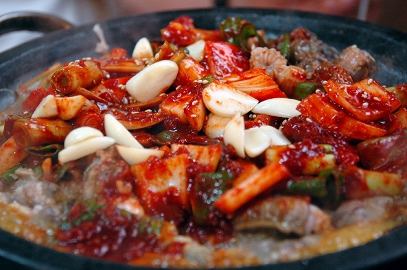

In some cultures, especially the Corean and the Japnese, the hogfish, in particular the inshore hogfish is considdered as food. On this page you will find a few recipes that contain hagfish, or it's slime. We are no experts on cooking with hagfish, but got these recipes from the following sources: Cookbook: Hagfish (Wikibooks), ifood.tv, sjbuzz.net.
"This is a Korean dish prepared by stir frying the ingredients. Inshore hagfish is stir-fried in sauce and served with alcohol. The fish is sometimes stir-fried in its spicy seasoning and some vegetables on a grill in an unusual manner. The fish is then placed over perilla leaf and eaten. It is often paired with a spicy and sweet sauce which imparts sweet and spicy texture to the fish."
